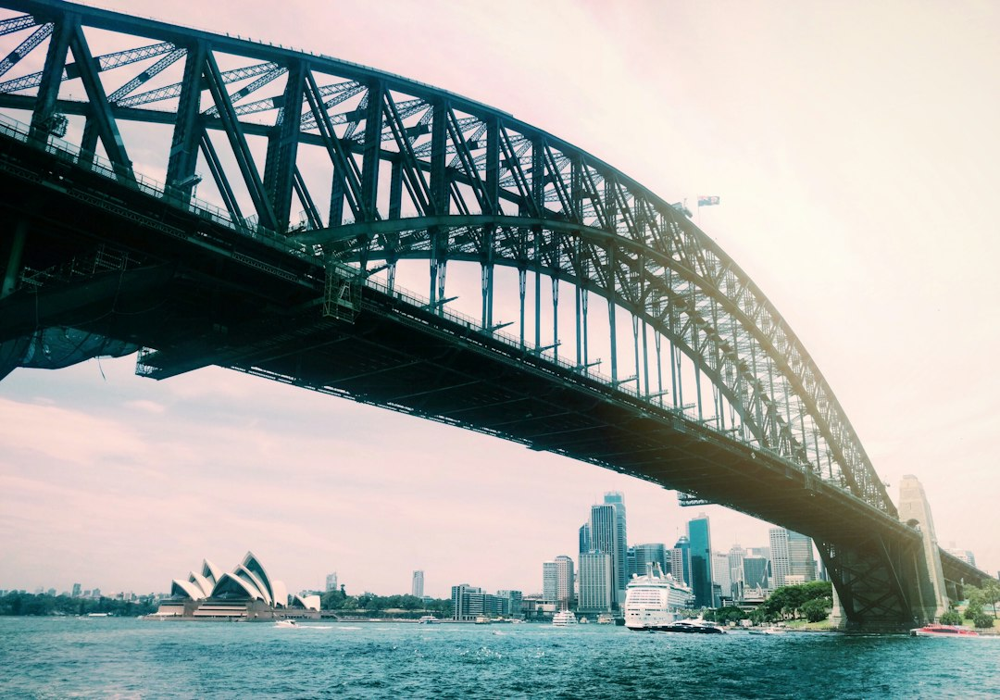

For a Sydney business website, the grounded starting point is scope, ownership and enquiry fit. The source page says standard business website timelines typically run 4 to 12 weeks, while cost varies by design complexity, content, ecommerce needs and custom features. No fixed dollar price is published. Buyers should ask what is included, who owns the domain, hosting and content, and whether the build supports mobile performance, editable pages and search foundations.
For business owners comparing website design sydney options, the useful brief starts with the customer decision, the platform, the content workload and the enquiry action the site must make obvious.
Website Design Sydney Explained
Web Design Sydney Australia frames a Sydney website as a business tool, not a design exercise in isolation. The source page puts the first decision before colour or layout: what the site has to change. That may be more qualified enquiries, a cleaner quote path, a stronger platform, or a redesign that protects useful pages already ranking.
A practical brief should separate three things before a quote is compared. First, define the visitor groups, such as local searchers, referral visitors and returning customers. Second, state the platform need, because WordPress, Shopify, WooCommerce and custom builds solve different ownership and operating problems. Third, document the material that affects effort, including page count, product data, integrations, copy readiness, redirects and care.
For a second local reference point on the same topic, this web design Sydney guide is useful when comparing how the same decision path can be explained from a broader search angle.
Who this applies to
This guide applies to Sydney businesses that need a website to explain an offer clearly, load cleanly on mobile and make enquiries easier. The source page names professional practices, cafes and online retailers as examples of businesses that need different proof, page structure and calls to action, even when they operate in the same metro market.
- Small businesses and sole traders: ask whether a sensible budget can still cover conversion focused pages, clear ownership and practical handover.
- Retail and ecommerce businesses: check whether Shopify or WooCommerce is being chosen for catalogue, checkout and update needs, rather than trend or preference.
- Businesses with older sites: ask how useful existing pages, search visibility and redirects will be handled during a redesign.
- Campaign teams: define whether the job is a full site or a focused landing page for ads, launches or promotions.
Cost and timing signals to ask about
The source page does not publish a fixed price list. It says Sydney website costs vary widely depending on scope, design complexity, content, ecommerce and custom features. It also says a standard business website typically takes 4 to 12 weeks, including discovery, design, development, testing and content creation.
That makes a written scope more useful than a headline price. Ask whether content, images, hosting, maintenance and post launch support are included. If a quote is low, clarify what work is excluded. If a quote is higher, ask which items create the extra effort, such as integrations, product data, copywriting, redirects, care plans or a deeper custom design process.
Timing also depends on approvals and content readiness. A business that can supply decisions, page feedback and product information promptly is working with a different project risk than one still deciding its offer or service structure during the build.
Platform, ownership and handover
The source page is unusually direct about ownership: the domain, content and finished site stay with the client, and logins are handed over. That matters because a website can look polished while still leaving the business unclear about hosting, admin access, editable content and future maintenance.
WordPress is presented as a flexible option for teams that want to manage pages without a developer on call. Shopify and WooCommerce are named for online stores. Custom work is positioned for businesses that need strategy led structure around a specific market, offer and customer journey. The choice should follow operations, not fashion.
Before approving a build, ask these ownership questions:
- Who controls the domain registration and hosting account?
- Which pages can be edited without developer help?
- Will redirects be planned if an older site is replaced?
- What care, backups, security and support are available after launch?
Search foundations without ranking promises
The source page describes fast, mobile first, search ready foundations, but it also rejects first page guarantees. That is the right distinction. A clean build can help a site be crawled, understood and used, while rankings still depend on content, authority, competition and time.
For buyers, the useful questions are concrete. Ask how service pages will be structured, how local intent will be handled without stuffing suburb names, how mobile performance will be tested, and how the site will make enquiries easy from key pages. For accessibility and web standards, the World Wide Web Consortium is a useful public authority to keep in view, while consumer claims and pricing representations should stay clear enough to satisfy ordinary Australian consumer expectations.
For website design sydney comparisons, avoid treating visual style as the whole purchase. The stronger test is whether the proposal connects offer, proof, platform, content and the next action a real customer should take.
- Define the change. Write down whether the site needs more qualified enquiries, a cleaner quote path, a stronger platform or a redesign of an existing site.
- Map the visitors. Separate local searchers, referral visitors and returning customers so the page order matches how people decide.
- Choose the platform. Pick WordPress, Shopify, WooCommerce or a custom build according to ownership, ecommerce and update needs.
- Price the scope. Compare quotes against page count, content readiness, integrations, product data, redirects and care.
- Confirm ownership. Ask for clear answers on domain control, hosting, admin access, handover and ongoing maintenance.
| Option | Best fit | Questions to ask |
|---|---|---|
| WordPress site | A business that wants editable pages and practical ongoing control | Who can update content, and what handover is included? |
| Shopify or WooCommerce store | A retailer that needs ecommerce pages, checkout and product data handled cleanly | How will products, images, shipping content and support be managed? |
| Redesign | An ageing or underperforming site with existing useful pages | How will rankings, redirects and existing content be protected? |
Common questions
How long does a standard business website take? The source page says a standard business website typically takes 4 to 12 weeks, including discovery, design, development, testing and content creation. The actual timing depends on site size, content readiness and approval speed.
Is there a fixed Sydney website price? No fixed dollar price is published in the supplied source. It says cost varies widely by scope, design complexity, content, ecommerce requirements and custom features.
Should a buyer expect first page Google guarantees? No. The source page states that clean foundations help, but ongoing search growth still depends on content, authority, competition and time.
What should be checked before signing a proposal? Check exactly what is included, including content, images, hosting and maintenance. Also confirm domain ownership, admin access, editable content, handover and post launch care.
This guide covers Sydney website brief, scope, platform, ownership, timing and search foundation questions for business buyers.